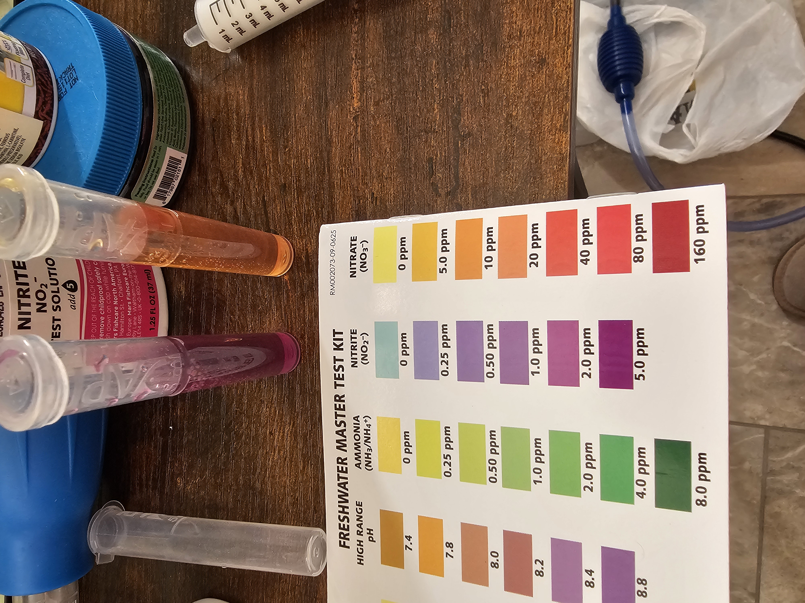
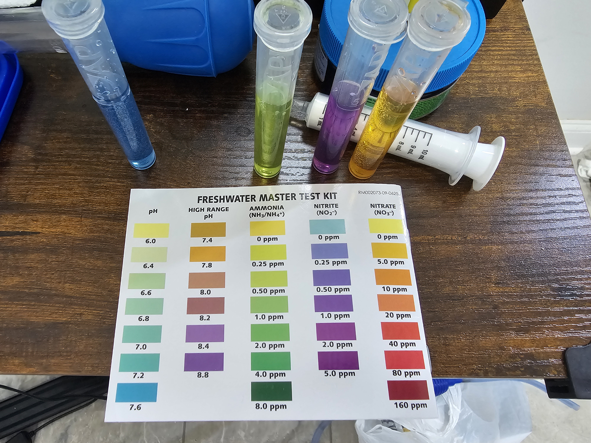
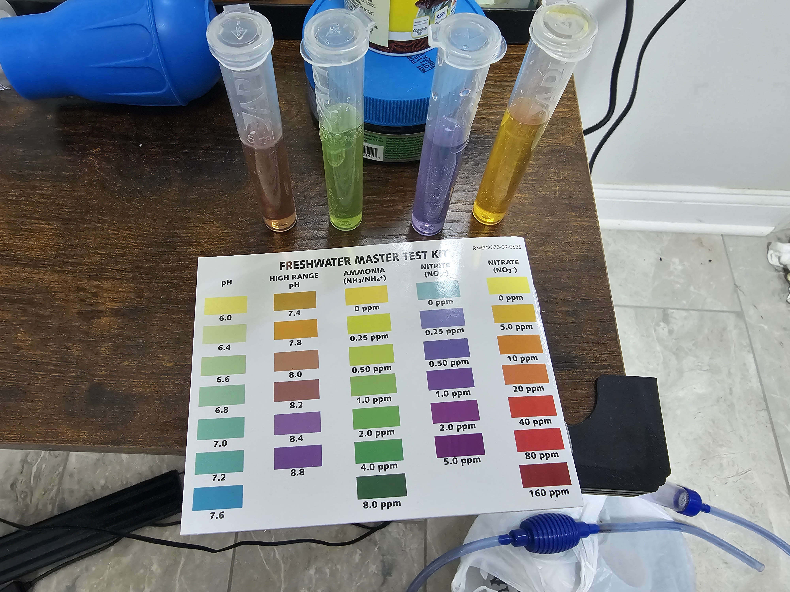
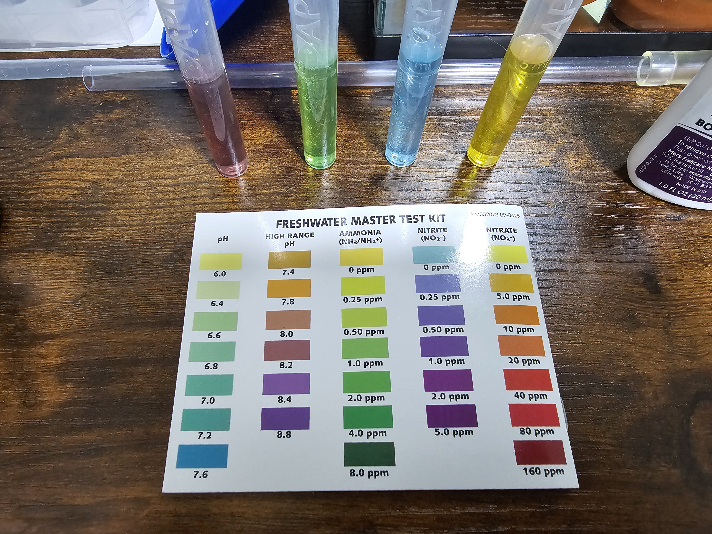
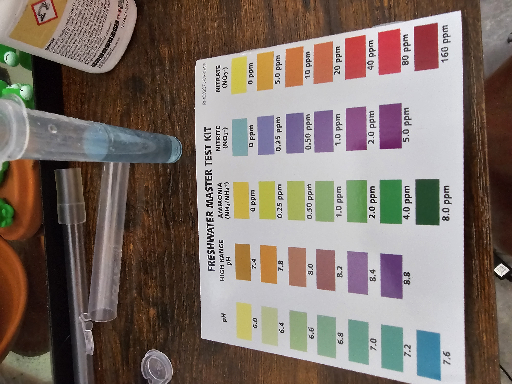
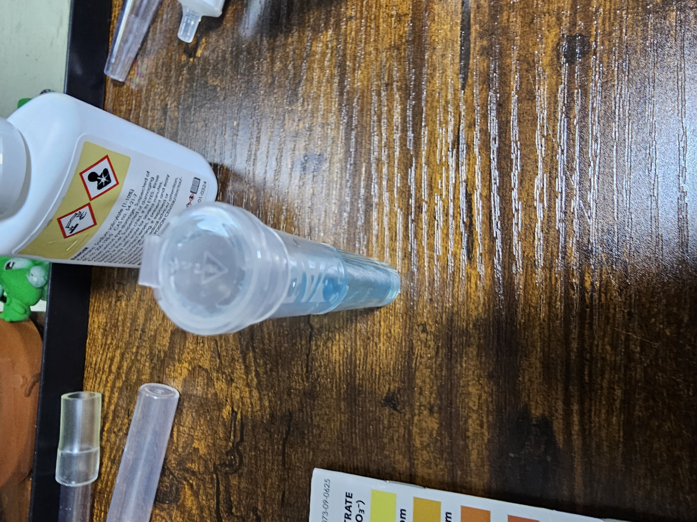
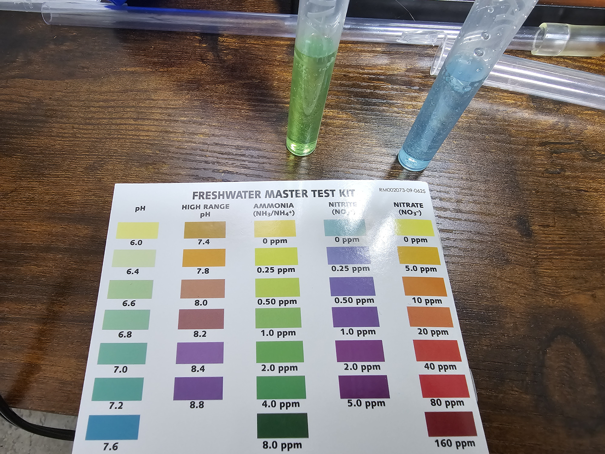

Water Parameters History
Latest Update:
7/24/2026: Even more nitrites and they ate all the ammonia again even after a re-dose.
Temperature: 75.2°F
pH: N/A
Ammonia: 0.0 ppm
Nitrite: 2-5 ppm
Nitrate: 5-10 ppm

7/22/2026: More nitrites
Temperature: N/A
pH: >7.6 (probably still 8.0)
Ammonia: 0.25-0.5 ppm
Nitrite: 1.0 ppm
Nitrate: 0-5 ppm

7.6 pH, light green ammonia test tube indicates 0.25-0.5 ppm, purple nitrite test tube indicates 1.0 ppm, yellow-orange nitrate test tube indicates 0-5 ppm" width="300">7/20/2026: After a million years of NOTHING NOTEWORTHY...
Temperature: N/A
pH: 8.0
Ammonia: 1.0 ppm
Nitrite: 0.25 ppm
Nitrate: 0-5 ppm
I heard somewhere that the nitrate test can be inaccurate if there is nitrites because the test itself converts nitrates to nitrites then detects those.

7/6/2026: Full stats check
Temperature: 79.2°F
pH: 8.2
Ammonia: 1.5 ppm
Nitrite: 0.0 ppm
Nitrate: 0.0 ppm
No, I don't know why the pH went up. Kind of scary that pH can just creep up like that. This was a used tank and the last death was caused by a pH spike... 👀 sooo yeah I gotta look out for that

7/4/2026: Waiting on Nitrites... during a heatwave...
Temperature: 82.7°F
pH: N/A
Ammonia: N/A
Nitrite: 0.0 ppm
Nitrate: N/A

7/2/2026: Waiting on Nitrites...
Temperature: N/A
pH: N/A
Ammonia: N/A
Nitrite: 0.0 ppm
Nitrate: N/A

6/30/2026:
Temperature: N/A
pH: N/A
Ammonia: ~1.0-1.5 ppm
Nitrite: 0.0 ppm
Nitrate: N/A

6/28/2026: Got all equipment for tank!
Temperature: ±0.5 from 76°F
pH: N/A
Ammonia: 0.5 ppm
Nitrite: 0.0 ppm
Nitrate: N/A


Parameters were very uninteresting until the 28th: 0 in everything
6/16/2026: Just got API Liquid Test Kit!
Temperature: N/A
pH: 7.4-7.6
Ammonia: 0.25-0.5 ppm
Nitrite: 0.0 ppm
Nitrate: 0.0 ppm